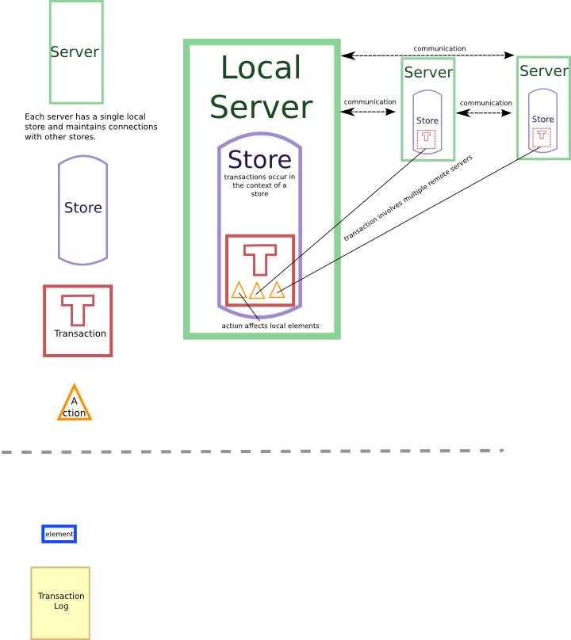

An ACID-compliant, persistent, and eventually distributed heap.
| Version: | 0.2.0 |
| License: | LGPL |
| Website: | on github.com |
| Author: | Red Daly <reddaly at gmail> |
| Dependencies: | alexandria, anaphora, bordeaux-threads, trivial-garbage, usocket |
Blockfort is a low-level, distributed transactional data store programmed in Common Lisp and intended for use by more abstract database systems.
There are many forms of databases, from pointer-based object databases to simple B-Tree stores like Berekely DB to monstrous black boxes like Oracle's products. Blockfort attempts to support a wide range of these high-level database abstractions and provide all the necessary primitives.
Importantly, Blockfort is distributed database system that is intended to scale well to many database nodes. Of course, blockfort supports single-node operation, but the ability to scale a system is important and so Blockfort acknowledges a possible distributed nature and provides the appropriate primitives for high-level paradigms to operate.
All the code is maintained in a git repository. To obtain the library, use the following command:
git clone git://github.com/gonzojive/cl-blockfort.git You can also browse the code at http://github.com/gonzojive/cl-blockfort.
Blockfort guarantees that certain behaviors are ACID compliant in its own sense and allows applications that call into Blockfort to guarantee ACID compliance in a way that makes sense for the application. ACID transactions guarantee the following properties:
Atomicity -- The transaction executes either all or none of its operations.
Consistency -- The database is in a "consistent" state before and after the transaction executes.
Isolation -- Concurrent transactions appear to be executing one after another, and they do not reflect intermediate changes made by each other.
To accomplish ACID compliance, Blockfort relies on two basic principles: transaction logging for recovering from failures, and a concurrency scheduler for dealing with concurrently-executing transactions. How ACID compliance is achieved in light of the rather agnostic nature of Blockfort in regards to the higher-level structure of its data should become clear after reading about blocks, concurrency control, and the interface between the two in Blockfort.

The above diagram illustrates the basic architecture of a blockstore-based database system. For each computer involved in conducting transactions on the database, there is a server object that
stuff